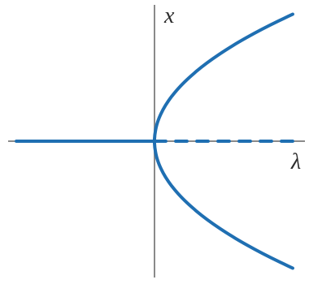
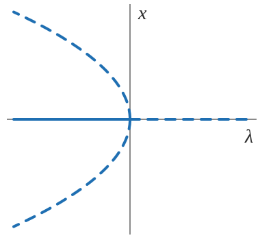
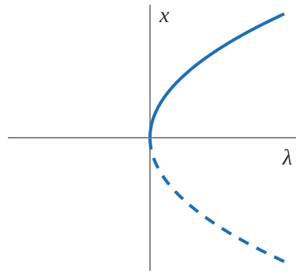
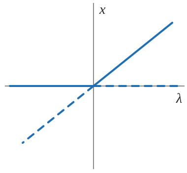
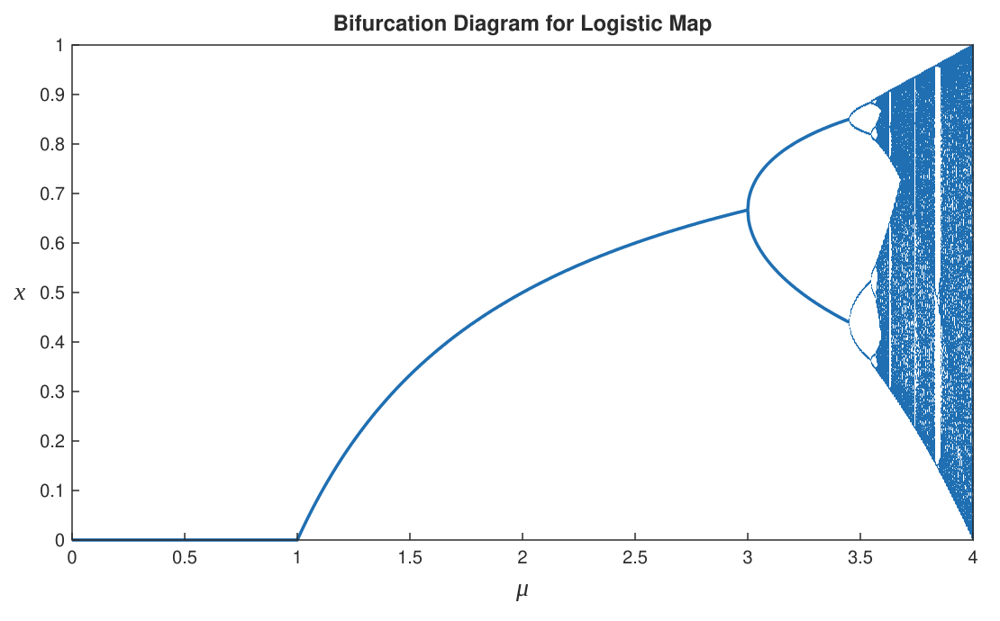
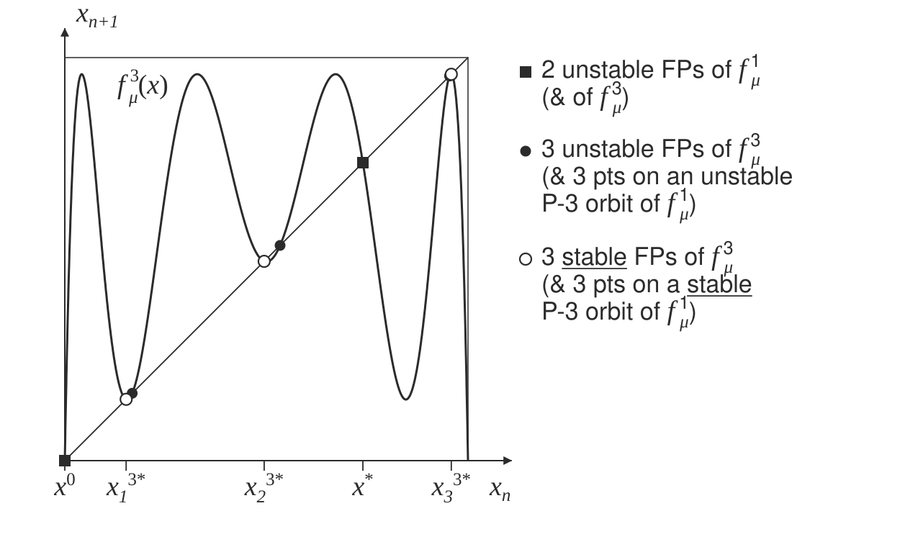
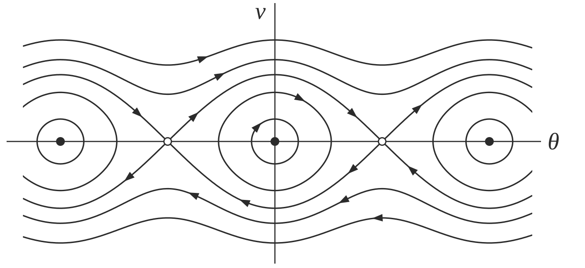
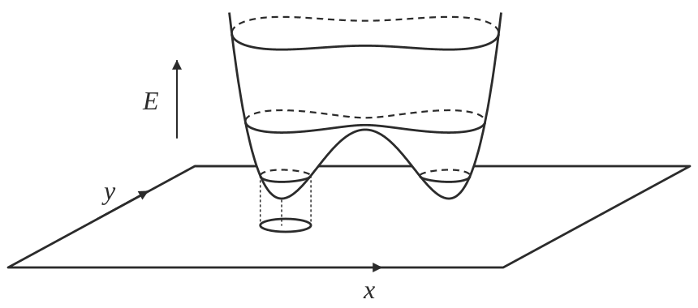

Nonlinear dynamics and chaos#
Some notes on nonlinear dynamics and chaos - bifurcations, linearization, and the Lorenz equations.
About this chapter
Most of this chapter is about fixed points: where they are, whether they are stable (linearize and look at the derivative, or the eigenvalues in more than one dimension), and how they appear, vanish or swap stability as a parameter changes. The bifurcation diagrams at the top show the four basic ways this happens in one dimension.
Discrete maps come next. Iterating the logistic map shows the period-doubling route to chaos in a few lines of algebra. The chapter ends with conservative systems, where energy is conserved and the phase portrait follows its level curves (the pendulum), and with the Lorenz equations, a three-variable model of convection whose fixed points are worked out by hand.
Chapter outline: 9 sections
- Normal forms of Hopf bifurcations4 figuresFour one-dimensional normal forms.
- Important figs4 figuresBesides the figures, this section holds the basic vocabulary: phase space, phase portraits, bifurcation diagrams, and the kinds of stability.
- Systems of Linear ODEsNear a fixed point a nonlinear system behaves like its linearization, so these cases are the vocabulary for everything else.
- Discrete Nonlinear Dynamical Systems1 interactiveNow time moves in steps: x_{n+1} = f(x_n).
- Conservative SystemsWithout friction the total energy is constant, so each trajectory stays on one level curve of E = \frac{1}{2}m\dot{x}^2 + V(x).
- Ref
- Benard Convection
- Lorenz equationsThree ODEs for the leading coefficients of a convection model.
- Linearization of Lorenz Equations about FPs $\bar{\underline{x}}$The same linearization as in one dimension, now with the matrix of partial derivatives of the three right-hand sides evaluated at a fixed point.
Normal forms of Hopf bifurcations#
Four one-dimensional normal forms. In each diagram the parameter \(\lambda\) is on the horizontal axis and the fixed points on the vertical axis; solid branches are stable and dashed ones unstable.
pitchfork: \(\dot{x} = \lambda x - x^3\)

Fig. 11 Figure 1. Supercritical pitchfork, \(\dot{x} = \lambda x - x^3\). The branch \(x = 0\) is stable (solid) for \(\lambda < 0\) and unstable (dashed) for \(\lambda > 0\), where two stable branches \(x = \pm\sqrt{\lambda}\) emerge.#
subcritical pitchfork: \(\dot{x} = \lambda x + x^3\)

Fig. 12 Figure 2. Subcritical pitchfork, \(\dot{x} = \lambda x + x^3\). The branch \(x = 0\) is stable for \(\lambda < 0\) and unstable for \(\lambda > 0\); the two side branches \(x = \pm\sqrt{-\lambda}\) exist for \(\lambda < 0\) and are unstable.#
saddle node (turning point): \(\dot{x} = \lambda - x^2\)

Fig. 13 Figure 3. Saddle-node, \(\dot{x} = \lambda - x^2\). No fixed points for \(\lambda < 0\); for \(\lambda > 0\) a stable branch \(x = \sqrt{\lambda}\) and an unstable branch \(x = -\sqrt{\lambda}\) are born at the origin.#
transcritical: \(\dot{x} = \lambda x - x^2\)

Fig. 14 Figure 4. Transcritical, \(\dot{x} = \lambda x - x^2\). The fixed points \(x = 0\) and \(x = \lambda\) cross at the origin and exchange stability.#


Important figs#
Besides the figures, this section holds the basic vocabulary: phase space, phase portraits, bifurcation diagrams, and the kinds of stability. The working method is to find the fixed points first, then linearize: for \(\dot{x} = f(x)\) near \(\bar{x}\), the perturbation obeys \(\dot{\delta x} = \delta x f'(\bar{x})\), so in one dimension \(f'(\bar{x}) < 0\) means stable.
period-doubling (flip bifurcation) \(f = \mu x (1-x) (f = \mu \sin (\pi x) \) is similiar)

Fig. 15 Figure 5. Long-run values of \(x\) under the logistic map \(x \to \mu x(1-x)\) as \(\mu\) grows: one fixed point up to \(\mu = 3\), then period 2, period 4 near 3.45, and a cascade of doublings into chaos past about 3.57, with periodic windows such as period 3 near 3.83.#
inverse tangent bifurcation - unstable and stable P-3 orbits coalesce, move slightly off bisector and becomes chaotic

Fig. 16 Figure 6. The third iterate \(f^3\) of the logistic map just past the start of the period-3 window. Its intersections with the diagonal are the period-3 points: three stable ones (open circles), each next to an unstable one (filled).#
pendulum

Fig. 17 Figure 7. Pendulum phase portrait, angle \(\theta\) against angular velocity \(\nu\). Closed orbits circle the stable centers at \(\theta = 0, \pm 2\pi\); separatrices meet at the saddles at \(\pm\pi\); the wavy curves above and below are full rotations.#
energy surface - trajectories run around the surface, not down it

Fig. 18 Figure 8. A double-well energy surface. Trajectories run around the surface along level curves of constant energy, not down it: low energies stay in one well, high energies circle both.#
Conservative systems: 6.5
study Hamiltonian p. 187-188
Pendulum: 6.7
dynamics - study of things that evolve with time
chaos - deterministic, aperiodic, sensitive, long-term prediction impossible


phase space - has coordinates \(x_1,...,x_n\)
phase portrait - variable x-axis, derivative y-axis
bifurcation diagram - parameter x-axis, steady state y-axis
draw separate graphs for these
first check - look for fixed points
for 1-D, if f’ \(<\) 0 then stable
stable f.p. = all possible ICs in a.s.b.f.n. result in trajectories that remain in a.s.b.f.n. for all time
asymptotically stable f.p. - stable and approaches f.p. as \(t\ra\infty\)
hyperbolic f.p. - eigenvals aren’t strictly imaginary
bifurcation point of f.p. - point where num solutions change or phase portraits change significantly
globally stable - stable from any ICs
autonomous = f is a function of x, not t
we can always make a system autonomous by having \(x_n\) = t, so \(\dot{x_n}\) = 1
dimension = number of 1st order ODEs, dimension of phase-space
existence and uniqueness thm: if \(\dot{x}\) and \(\dot{x}'\) are continuous, then there is some unique solution
linearization - used to find stability of f.p.s
- \[\begin{split} \dot{x} = f(x) \\ \text{define }\delta x = (x-\bar{x}) \\ \dot{\delta x} = \frac{d}{dt}(x-\bar{x}) = \dot{x} = f(x) = f(\bar{x}+\delta x) \\ \dot{\delta x} =\cancelto{0}{\cblue{f(\bar{x})}} + \corange{\delta x f'(\bar{x})} + \cancelto{\text{0 by HGT iff f'!=0}}{\cgreen{O(x^2)}} \\ \dot{\delta x} = \corange{\delta x f'(\bar{x})} \to \text{ now solve FOLDE} \\ \end{split}\]
value at fixed point + linear term + higher-order terms
solving Hopf: use polar to get \(\dot{\rho}, \dot{\theta}\)
multiply one thing by cos, one by sin, then add
\( \rho = \sqrt{x_1^2 + x_2^2} \\ \theta = tan^{-1}(\frac{x_2}{x_1})\)
Hysterisis curve - S-shaped curve of fixed branches - ruler getting larger - snap bifurcation - both axes are parameters
Systems of Linear ODEs#
Near a fixed point a nonlinear system behaves like its linearization, so these cases are the vocabulary for everything else. The sign of each eigenvalue’s real part says whether trajectories move in or out along it, and an imaginary part makes them spiral.
solutions are of the form \(\underbar{x}(t) = \underbar{C}_1e^{\alpha_1 t} + \underbar{C}_2e^{\alpha_2 t}\)
Eigenspaces: \(E^S\) (stable), \(E^U\) (unstable), \(E^C\) (center - real part) - plot eigenvectors
how to solve these systems?
solve eigenvectors
positive real part - goes out
negative real part - goes in
bifurcation requires 0 as eigenvalue
has imaginary component: spiral / focus
purely imaginary - center = stable, but not a.s.
finite velocity = \(\frac{dRe(\alpha)}{d\lambda}\)
change coordinates to polar
for \(\lambda \geq 0\), solution is a stable L.C. (from either direction spirals into a circular orbit)
attracting - any trajectory that starts within \(\delta\) of \(\bar{\underbar{x}}\) evolves to \(\bar{\underbar{x}}\) as t \(\to \infty\) (it doesn’t have to remain within \(\delta\) at all times
stable (Lyapanov stable) - any trajectory that starts within \(\delta\) remains within \(\varepsilon\) for all time (\(\varepsilon\) is chosen first)
asymptotically stable - attracting and stable
hyperbolic f.p. - iff all eigenvals of the linearization of the nds about the f.p. have nonzero real parts \
Discrete Nonlinear Dynamical Systems#
Now time moves in steps: \(x_{n+1} = f(x_n)\). A fixed point is stable when \(|f'(x^*)| < 1\). For the logistic map \(f(x) = \mu x(1-x)\), \(f'(x^*) = 2 - \mu\) at the nonzero fixed point, so it loses stability at \(\mu = 3\), where the first period doubling happens.
functional iteration: \(x_{n+m} = f^m(x_n)\) (apply f m times)
fixed point: \(f(x^*)=x^*\)
f.p. stable if \(\vert \frac{df}{dx}(x^*)\vert <1\), unstable if \(>\) 1
check n-orbit by checking nth derivative: \(\frac{df^n}{dx}(x_i^*) = \prod_{i=1}^{n-1} \frac{df}{dx}(x_i^*)\)
period-doubling bifurcations
self-stability - orbit for which the stability-determining derivative is zero. This means that the max of the map and the point at which the max occurs are in the orbit.
type I intermittency - exhibited by inverse tangent bifurcation
Feigenbaum sequence - period-doubling path to chaos, keep increasing parameter until period is chaotic
3D attractor type |
Sign of exponents |
|---|---|
Fixed point |
(-, -, -) |
Limit cycle |
(0, -, -) |
Torus |
(0, 0, -) |
Strange attractor |
(+, 0, -) |
homoclinic orbit - connects unstable manifold of saddle point to its own stable manifold
e.g. trajectory that starts and ends at the same fixed point
manifolds are denoted by a W (ex. \(W^S\) is the stable manifold)
heteroclinic orbit - connects unstable manifold of fp to stable manifold of another fp \
Conservative Systems#
Without friction the total energy is constant, so each trajectory stays on one level curve of \(E = \frac{1}{2}m\dot{x}^2 + V(x)\). That is why the pendulum’s phase portrait above is a family of closed orbits around the centers plus the rotations above and below.
\(F(x) = -\frac{dV}{dx}\) (by defn.)
\(m\ddot{x}+\frac{dV}{dx}=0\), multiply by \(\dot{x} \to \frac{d}{dt}[\cblue{\frac{1}{2}m\dot{x}^2}+\corange{V(x)}]=0\)
so total energy \(E=\cblue{\frac{1}{2}m\dot{x}^2}+\corange{V(x)}\)
kinetic + potential
motion of pendulum: \(\frac{d^2\theta}{dt^2}+\frac{g}{L}\sin\theta=0\)
nondimensionalize with \(\omega=\sqrt{g/L}, \tau=\omega t \to \ddot{\theta}+\sin\theta =0\)
can multiply this by \(\dot{\theta}\)
\(\omega\)-limit \(t \to \infty\)
\(\alpha\)-limit \(t \to -\infty\)
libration - small orbit surrounding center
system: \(\dot{\theta}=\nu\), \(\dot{\nu} = -\sin\theta\)
Hamiltonian Dynamical System#
Motion generated by a single function \(H\), with \(\dot{x} = \partial H/\partial y\) and \(\dot{y} = -\partial H/\partial x\). Fixed points can only be centers or saddles, and in two dimensions Poincare-Bendixson rules out chaos.
\(\dot{\underbar{x}}=\frac{\partial H}{\partial y}(\underbar{x},\underbar{y})\) , \(\dot{\underbar{y}}=-\frac{\partial H}{\partial x}(\underbar{x},\underbar{y})\) for some function H called the Hamiltonian
we can only have centers (minima in the potential) and saddle points (maxima)
separatrix - orbit that separates trapped and passing orbits
Poincare Benderson Thm - can’t have chaos in a 2D system
Ref#
\(\frac{\partial}{\partial x}(f_1 * f_2 * f_3) = \frac{\partial f_1}{\partial x} f_2 f_3 + \frac{\partial f_2}{\partial x} f_1 f_3 + \frac{\partial f_3}{\partial x} f_1 f_2\)
\(e^{\mu it} = \cos(\mu t)+ isin(\mu t)\)
\(x = A e^{(\lambda + i)t} + B e^{(\lambda - i)t} \implies x = (A' \sin(t) + B' \cos(t)) e^{\lambda t}\) If we have \(\dot{x_1},\dot{x_2}\) then we can get \(x_2(x_1) with \frac{dx_1}{dx_2} = \frac{\dot{x_1}}{\dot{x_2}}\)
Benard Convection#
The Navier-Stokes Equations
Position
Differential element in configuration space
Time
Lorenz equations#
Three ODEs for the leading coefficients of a convection model. Here \(x, y, z\) are Fourier coefficients, not positions. The algebra below finds the fixed points and starts the linearization around them.
Lorenz was studying hurricanes
ODEs for 3 coefficients in larger system (others are pretty small
use stream functions
Navier-Stokes PDEs - conservation of momentum - derive these equations as project?
no-flow steady-state \(T(y) = T_B + (T_T-T_B)y\)
Lorenz (ODE’s): x,y,z are coefficients in Fourier expansion, not dimensions $\(\dot{x}(t) = -\sigma x+ \sigma y\)\( \)\(\dot{y}(t) = (\rho_o)x - y - xz\)\( \)\(\dot{z}(t) = -bz + xy\)$
\(p_o\) - proportional to size of system
b - aspect ration - related to height:width
Navier-Stokes
independent variables
Position (vector)
Time (scalar)
dependent variables
Density (scalar)
fixed points
\(b>0, \rho_0 > 0, \sigma>0\) - let b,\(\sigma\) be fixed
fixed point \((\bar{x},\bar{y},\bar{z})\) is constant
equations
\(\dot{\bar{x}}(t) = 0 = -\sigma \bar{x}+ \sigma \bar{y}\)
\(\dot{\bar{y}}(t) = 0 = (\rho_o) \bar{x} - \bar{y} - \bar{x}\bar{z}\)
\(\dot{z}(t) = 0 = -b\bar{z} + \bar{x}\bar{y}\)
doing some algebra we get
\(FP_0, \forall \rho_o\)
\(\bar{x} = 0\)
\(\bar{y} = 0\)
\(\bar{z} = 0\)
\(FP_+, \rho_o \geq 1\)
\(\bar{x} = +\sqrt{b (\rho_o-1)} \)
\(\bar{y} = +\sqrt{b (\rho_o-1)}\)
\(\bar{z} = \rho_o-1\)
\(FP_-, \rho_o \geq 1\)
\(\bar{x} = -\sqrt{b (\rho_o-1)} \)
\(\bar{y} = -\sqrt{b (\rho_o-1)}\)
\(\bar{z} = \rho_o-1\)
these equations have symmetry
replace \((x(t),y(t),z(t))\) by \((-x(t),-y(t)),z(t)) \to\) we get back the original equations
$ M=
$
Linearization of Lorenz Equations about FPs \(\bar{\underline{x}}\)#
The same linearization as in one dimension, now with the matrix of partial derivatives of the three right-hand sides evaluated at a fixed point.
\(\frac{d}{dt}\delta x(t) = \frac{\partial f}{\partial x}\vert _ \bar{\underline{x}}= -\sigma\)
\(\frac{d}{dt}\delta y(t) = \frac{\partial f_2}{\partial x}\vert _ \bar{\underline{x}}*\delta x(t) + \frac{\partial f_2}{\partial y}\vert _ \bar{\underline{x}}*\delta y(t) + \frac{\partial f_2}{\partial z}\vert _ \bar{\underline{x}}*\delta z(t) +...\) (higher order derivatives)
\(= (r-\bar{z})*\delta x(t) + -1*\delta y(t) + -\bar{x}*\delta z(t) + \delta x \delta z\)
do the same thing for \(\delta z(t)\)
Key ideas
Analysis starts with the fixed points; linearizing around each one tells whether nearby trajectories approach or leave it.
In one dimension a fixed point of \(\dot{x} = f(x)\) is stable when \(f'(\bar{x}) < 0\); in higher dimensions the signs of the eigenvalues’ real parts decide, and imaginary parts make trajectories spiral.
Bifurcations (pitchfork, saddle-node, transcritical) create, destroy or swap the stability of fixed points as a parameter changes.
For a map \(x_{n+1} = f(x_n)\) a fixed point is stable when \(\vert f'(x^*) \vert < 1\); the logistic map loses this at \(\mu = 3\) and period-doubles into chaos.
In conservative systems energy is constant, so trajectories follow its level curves, and a 2D system cannot be chaotic.
The Lorenz equations are three ODEs for coefficients of a convection model; their fixed points \(FP_\pm\) appear for \(\rho_0 \geq 1\).